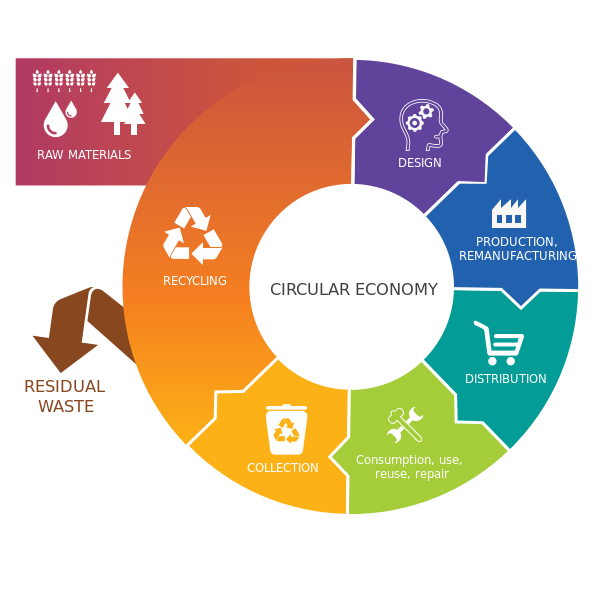

Two demands at once
A building is asked to do two things that pull against each other: use less material and less energy, and keep the people inside it healthy. Ventilate harder and you dilute infection but burn energy. Seal the envelope and you save carbon but change the air people breathe. Our work sits on that trade-off rather than on either side of it.

Materials and the circular economy
Dr Anne Velenturf applies circular economy thinking from offshore wind to the foundation industries. She was Technical Programme Manager of TransFIRe, the Transforming Foundation Industries Research and Innovation Hub, is lead researcher on RESCUE, the regulatory science network on sustainable circular use at end of life for wind, leads circular business model development on the Horizon Europe project EoLO-HUBs on wind turbine blade recycling, and sits on the steering group of IEA Wind Task 45, co-leading knowledge exchange.
Closer to home, the Yorkshire Circular Lab is a living lab supporting the region's circular economy transition.
Recovering resources from the waste a building produces
The BioResources theme works on what comes out of buildings and settlements: recovering energy and nutrients from waste (Dr Louise Fletcher), and from wastewater and faecal sludge through anaerobic digestion and microalgae (Dr Cynthia Okoro-Shekwaga, Dr Miller Alonso Camargo-Valero, Dr Franja Prosenc).
Read how that work runs from a Leeds bench to a dairy farm in Uganda
Keeping the inside healthy
Low-carbon ventilation and building physics are the other half of the problem: Professor Simon Rees and Dr Sally Shahzad work on thermal behaviour, comfort and ventilation, while Professor Catherine Noakes and Dr Amirul Khan work on what ventilation does to airborne infection risk. Our building physics laboratory studies thermal behaviour, airflow, acoustics, light and climate, and the aerobiology chamber lets ventilation and air cleaning be tested at room scale.
That question — how to design and retrofit homes that are healthy for people and the planet, and that reduce health inequalities — is the subject of the HESTIA network, alongside the Healthy Buildings Network and its industrial network of around 75 companies.